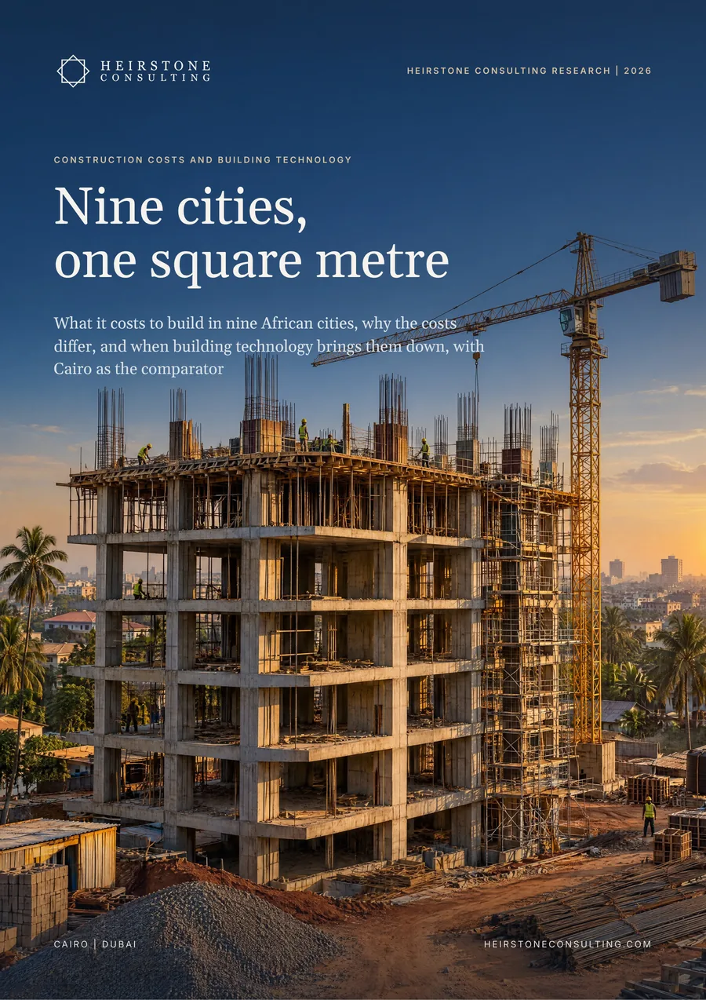
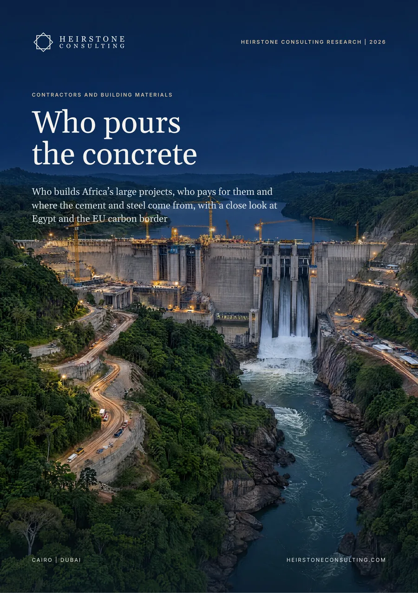
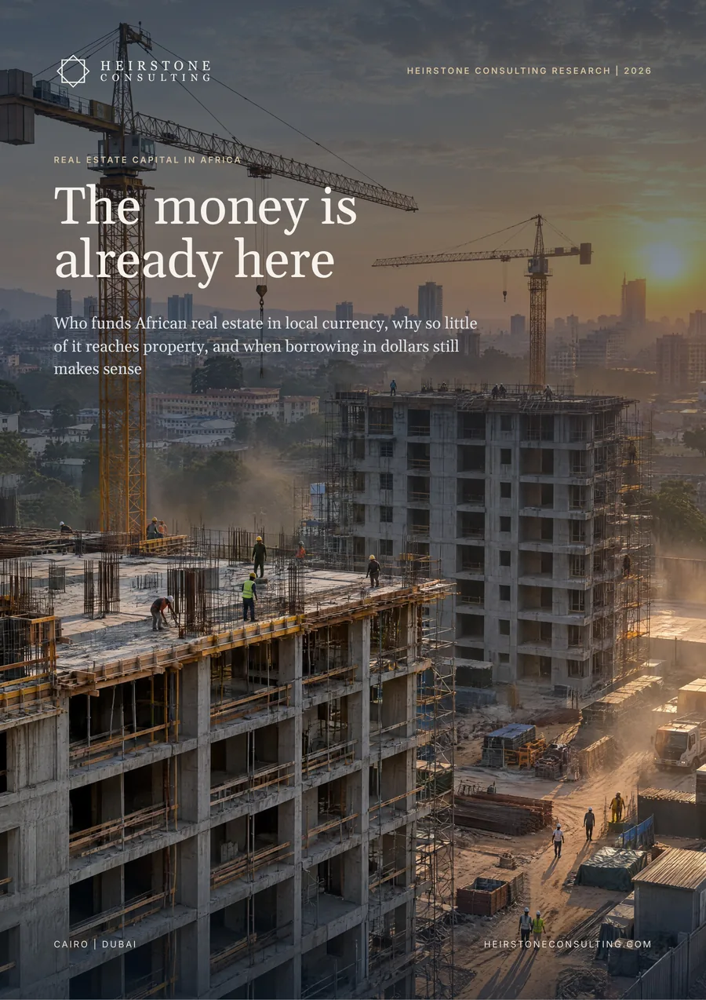
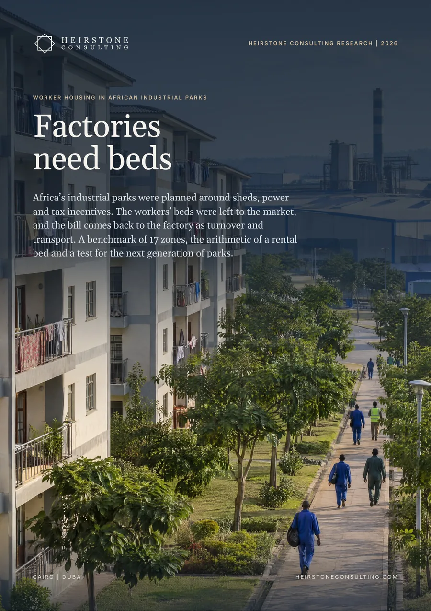
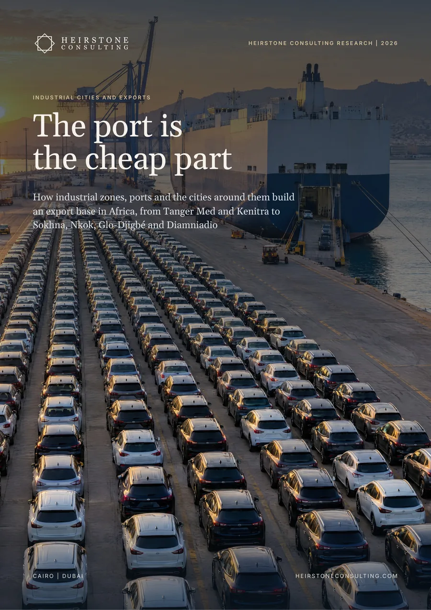
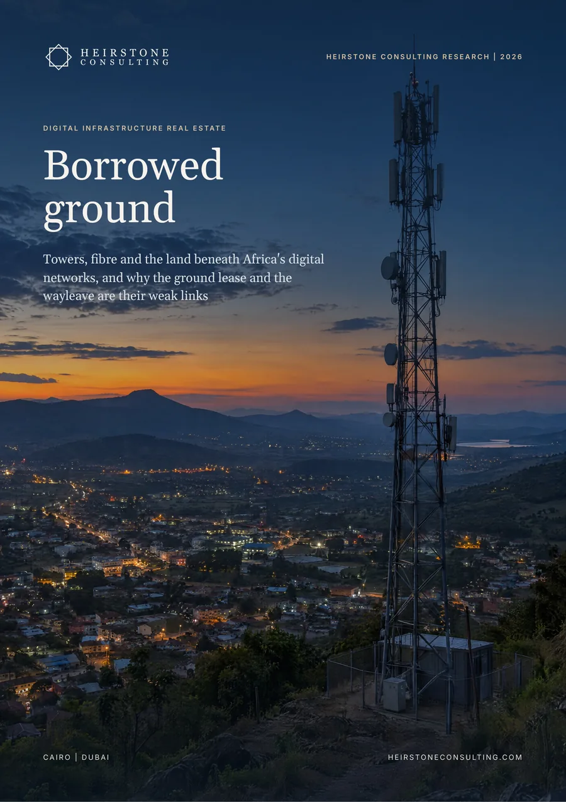

What it costs to build in nine African cities, why the costs differ, and when building technology brings them down, with Cairo as the comparator.
Also available in French: Coûts de construction et technologies du bâtiment: Neuf villes, un mètre carré. Choose the language when you request the report.

The report in six numbers
AECOM's price for a multi-storey residential block in Lagos against Nairobi on the same 2024/25 guide: US$2,330 against US$796 per m²
a 50 kg bag of cement in Egypt in 2025, the lowest of the ten cities. The same bag cost US$11.03 in Kinshasa.
the weight of cement and lime in Kenya's building cost index. Labour weighs 21% and steel 11%.
interest on a two-year, fully debt-funded build as a share of hard cost, from Casablanca to Lagos
added to the price of imported cement by duty and VAT in Kenya and Tanzania, against 14% in Egypt
the saving reported on a completed 3D-printed school in Malawi. Dubai's 3D printing strategy had stated 50 to 70%.
In brief
We assembled published construction costs, cement and steel prices, tariffs, lending rates, wages and the evidence on industrialised building for nine African cities and Cairo into the Heirstone Build Cost Index 2026, then measured how many points of construction cost each lever could save in each city. The largest lever differs by city: credit in Lagos and Libreville, the border in Nairobi and Dar es Salaam, cement and haulage in Kinshasa, Douala, Abidjan and Casablanca. Building technology pays mainly through time, and only at volume.
AECOM prices a multi-storey residential block at US$2,330 per m² in Lagos, US$893 in Dar es Salaam and US$796 in Nairobi. Kinshasa, Douala, Libreville, Abidjan and Dakar have only national or regional averages, mostly prestige-office figures, and Casablanca has no published construction cost. Egyptian apartments, at US$720 to 1,270 per m² to local specification, cost 45 to 69% less than Lagos.
A bag costs US$4.13 in Egypt and US$11.03 in Kinshasa, yet cement and lime weigh 14% in Kenya's building cost index. Nigeria's competition regulator puts capacity at 60 to 65 Mt for 25 to 30 Mt of demand, yet cement cost US$135 to 217 a tonne in 2026. Egypt runs its kilns at about 86% of capacity and sold at US$101 to 106 a tonne even at the 2025 peak.
Duty and VAT add 57 to 59% to imported cement in Kenya and Tanzania, 41 to 43% in the CFA franc zones and Morocco, and 14% in Egypt. Gabon's official price list puts cement 37 to 60% higher in the interior than around Libreville, and Kinshasa's price halved from US$21 to US$11 a bag when a transport strike ended.
Interest on a two-year build is 5% of hard cost in Casablanca and 21 to 39% in Lagos, where contractors also add 35% for overheads and profit on a small job against 15% in Nairobi. Cameroon and Gabon share a 4.50% policy rate, yet bank credit cost 9.03% and 21.51% respectively.
Claimed savings fall from 50 to 70% in Dubai's strategy to 10 to 15% on completed projects. Time savings of 30 to 50% hold up better, and they are worth most where money is dear: taking a quarter off a two-year programme saves 6 to 12 points of hard cost in Lagos and about 1.6 in Dakar.
What it means
Start with the top rung in your own city: the EAC's 35% tariff band and the levies on clinker and steel in East Africa, the haulage corridor in Gabon and the DRC, clinker made at home in Cameroon, Gabon and Côte d'Ivoire. Publish a construction cost index by city and building type, approve standards for industrialised systems before funding factories, and cap permit times, as Egypt's building code does at 30 days.
Cheaper and longer construction credit is the largest lever in Lagos and Libreville, worth 14 to 18 points of hard cost on a two-year build, more than any material. Underwrite programme length as closely as the rate, lend to building factories only against a pipeline that passes the Volume Test, and focus long-term lending on Central Africa.
Package work at scale: in Lagos a large package cuts about 8% from overheads, profit and preliminaries. Source structure regionally, budget in local currency with the exchange-rate date stated, choose a building system by the city's top rung, and commission a local cost plan where a city has only a prestige-office average.
Inside the full report
Heirstone datasets
cities in the Heirstone Build Cost Index 2026: nine African cities, with Cairo as comparator
rungs on the Heirstone Cost Ladder, measured for each city: speed, credit, margin, border and cement
conditions in the Heirstone Volume Test of whether a building factory pays: pipeline, volume, approvals, finance and distance
Built from public sources current at October 2026. Every figure is referenced in the report, and figures we derive by combining published numbers are labelled Heirstone analysis.
AECOM's 2024/25 Africa guide prices an average multi-storey residential block at US$2,330 per m² in Lagos, US$893 in Dar es Salaam and US$796 in Nairobi, excluding VAT, land, site works and fees. Turner & Townsend's 2026 survey, an average of six building types to an international specification, puts Lagos at US$1,927 and Nairobi at about US$851. Knight Frank puts Egyptian apartments at US$720 to 1,270 per m².
Less than claimed. Stated savings fall from 50 to 70% in Dubai's 3D printing strategy to about 15% on a completed 3D-printed school in Malawi and 10% on a printed house in Germany. Time savings of 30 to 50% hold up better and pay most where credit is dear: finishing a two-year build in 18 months saves 6 to 12 points of hard cost in interest in Lagos. A factory pays only at volume, which the Heirstone Volume Test checks.
Mostly because of duties, haulage and imported clinker. Duty and VAT add 57 to 59% to imported cement in Kenya and Tanzania against 14% in Egypt, cement costs 37 to 60% more in Gabon's interior than around Libreville, and a 50 kg bag cost US$11.03 in Kinshasa in 2024 against US$4.13 in Egypt in 2025.
Real Estate Strategy
Heirstone Consulting Research

Contractors and Building MaterialsWho pours the concrete
Real Estate Capital in AfricaThe money is already here
Worker Housing in African Industrial ParksFactories need beds
Industrial Cities and ExportsThe port is the cheap part
Digital Infrastructure Real EstateBorrowed groundSpeak directly with a senior partner about your project, asset or programme.
Get in Touch